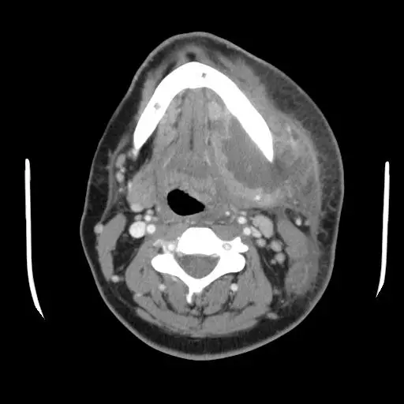

DX.2 — Abcès dentoalvéolaire 🚩 E3
L’abcès dentoalvéolaire se draine d’abord par la dent ou par incision, car l’antibiotique seul pénètre mal une collection isolée de la circulation S6. Le médecin cherche avant tout une atteinte des voies aériennes, un trismus important ou une tuméfaction du plancher buccal, qui imposent l’hôpital sans délai S6S8.
1. Définition
Le programme écossais SDCEP (Scottish Dental Clinical Effectiveness Programme) définit l’abcès apical aigu comme l’évolution d’une parodontite apicale dans laquelle l’infection forme une tuméfaction remplie de pus S8. Il en cite les synonymes : abcès périradiculaire aigu, abcès dentoalvéolaire aigu et abcès périapical aigu S8. Les HUG (Hôpitaux universitaires de Genève) situent cette collection purulente à l’apex de la racine, alors que l’abcès parodontal naît sur la gencive à partir d’une poche parodontale S2.
2. Épidémiologie (Suisse, puis Europe)
La policlinique de chirurgie orale de Zurich traite entre 100 et 150 urgences chaque semaine, et la douleur y reste le motif central S4. Son chef de clinique observe que les abcès deviennent plus fréquents en début d’année, ce qu’il rattache, par hypothèse, à une baisse des défenses S4. Près des deux tiers de ces patients ne possèdent aucun médecin-dentiste attitré ou ne consultent plus depuis longtemps S4.
En Romandie, une enquête genevoise a interrogé 331 médecins-dentistes, avec un taux de réponse de 28 % S3. L’abcès avec symptômes généraux y constitue la première indication d’antibiotique, citée par 89 % des répondants, devant la cellulite à 81,5 % S3. Les auteurs retiennent l’amoxicilline comme premier choix et la clindamycine en cas d’allergie à la pénicilline S3.
En Écosse, les prescriptions dentaires représentaient 7,7 % des antibactériens oraux délivrés en soins primaires en 2024 S7. Le même programme signale une hausse de plus de 20 % pendant la pandémie, sans retour au niveau antérieur S7. La fenêtre chiffres et limites précise la population et la mesure de chaque chiffre.
Chiffres et limites
| Chiffre | Population et mesure | Ce qu’il ne mesure pas | Source |
|---|---|---|---|
| 100 à 150 urgences par semaine | Policlinique de chirurgie orale, Université de Zurich, 2013 | Ni la part exacte des abcès, ni une incidence | S4 |
| Deux tiers sans dentiste attitré | Patients des urgences dentaires zurichoises | Un lien causal avec l’abcès | S4 |
| 89 % (abcès avec symptômes généraux) | Médecins-dentistes romands répondants, déclaration de pratique | Une fréquence de la maladie | S3 |
| 81,5 % (cellulite) | Même enquête, indication d’antibiotique déclarée | La justesse des prescriptions | S3 |
| 7,7 % des antibactériens oraux | Soins primaires écossais, 2024 | Le diagnostic qui motive chaque ordonnance | S7 |
Aucune incidence suisse de l’abcès dentoalvéolaire n’a été trouvée ; les chiffres décrivent donc une charge de soins, non un risque individuel S3S4.
La même enquête romande montre l’écart entre pratique et recommandations ; la fenêtre pratique déclarée en Romandie le détaille situation par situation.
Pratique déclarée en Romandie
| Situation chez une personne en bonne santé | Antibiotique « oui » | Antibiotique « parfois » | Antibiotique « non » | Source |
|---|---|---|---|---|
| Pulpite réversible ou irréversible | 1 (3,3 %) | 16 (17,4 %) | 68 (74 %) | S3 |
| Nécrose pulpaire | 6 (6,5 %) | 47 (51,1 %) | 33 (35,9 %) | S3 |
| Parodontite chronique | 4 (4,3 %) | 33 (35,9 %) | 50 (54,3 %) | S3 |
| Traitement endodontique d’une dent vitale | 0 (0 %) | 1 (1,1 %) | 88 (95,6 %) | S3 |
| Traitement endodontique d’une dent nécrosée | 2 (2,2 %) | 32 (34,8 %) | 55 (59,8 %) | S3 |
Une nécrose pulpaire sans diffusion ne justifie pas d’antibiotique, alors que plus de la moitié des répondants en prescrivent parfois S3S6. En cas d’allergie à la pénicilline, 85,9 % des répondants choisissent la clindamycine, ce qui rejoint la position de la Société suisse de chirurgie orale (SSOS) S3S1. Les auteurs relèvent que 76,1 % des participants souhaitent des recommandations dentaires spécifiques sur l’antibiotique S3.
3. Physiopathologie
La parodontite apicale symptomatique naît souvent d’une nécrose et d’une infection de la pulpe, après une carie ou un traumatisme S9. Lorsque l’infection forme du pus autour de l’apex, la parodontite apicale devient un abcès apical aigu S8. La base anatomique montre le trajet de la pulpe vers l’apex et l’os alvéolaire.
Base à connaître : de la pulpe à l’os alvéolaire
Anatomie d’une molaire et de son parodonte. Le schéma en couleurs montre la pulpe, les canaux radiculaires, l’apex, l’os alvéolaire et la gencive S8.

Lisez d’abord seul ce cliché (anatomie d’une molaire et de son parodonte), puis cherchez vous-même les signes avant d’ouvrir la copie annotée.
- 1. La pulpe remplit la chambre centrale ; sa nécrose après une carie ou un traumatisme ouvre la voie à l’infection S9.
- 2. Le canal radiculaire conduit les bactéries vers l’apex ; le dentiste draine souvent l’abcès par ce même canal S8.
- 3. L’apex est le siège de la parodontite apicale, puis de la collection de pus qui définit l’abcès S8.
- 4. L’os alvéolaire porte la racine ; le pus le traverse avant d’atteindre la gencive ou la joue S2.
- 5. La gencive gonfle quand l’abcès s’étend ; la tuméfaction gingivale, faciale ou cervicale signe une infection qui progresse S8.
Ce que l’image décide. Le médecin cherche la dent sensible à la mastication et au toucher, puis il examine gencive, joue et cou, car l’extension décide de la conduite S8.

Les HUG citent comme causes la carie non traitée, la complication d’une pulpite, une affection gingivale, un traumatisme et une cause iatrogène S2. L’abcès dentaire est polymicrobien, mais il s’associe souvent aux streptocoques viridans ou à des germes à Gram négatif S6.
Une infection limitée aux tissus périradiculaires montre que l’immunité contrôle encore le foyer, si bien que l’antibiotique n’y apporte rien S6. L’abcès reste en outre largement isolé de la circulation, ce qui explique la très faible pénétration de l’antibiotique dans la collection S6. Le drainage, par la dent ou par incision, traite donc la cause, tandis que l’antibiotique sert seulement l’infection qui diffuse S6S7.
Le pus peut ensuite gagner l’espace masticateur, puis l’espace parapharyngé ou le voile du palais, ce que décrit une série zurichoise d’imagerie S5. La fenêtre voies d’extension chiffre ces trajets et relie chacun à un signe clinique.
Voies d’extension de l’abcès d’origine dentaire
| Siège | Fréquence (série de 30 patients) | Extension observée | Signe à chercher | Source |
|---|---|---|---|---|
| Ptérygoïdien médial | 13 patients, 43,3 % | Espace parapharyngé ou voile du palais dans 7 cas sur 13, soit 53,8 % | Trismus, voile bombé, dysphagie | S5S8 |
| Masséter ou ptérygoïdien latéral | 14 patients, 46,7 % | Diffusion dans l’espace dans 7 cas sur 14 ; espace sous-massétérin dans 7 cas, soit 70 % | Tuméfaction de l’angle, trismus | S5 |
| Temporal superficiel | 3 patients, 10 % | Atteinte temporale | Tuméfaction temporale | S5 |
| Espace sous-mandibulaire | 3 patients sur 14, soit 21,4 % | Diffusion hors de l’espace masticateur latéral | Tuméfaction sous la mandibule, plancher buccal | S5S6 |
Un abcès masticateur médial s’étend d’emblée hors de son espace ; il menace donc tôt le pharynx et les voies aériennes S5. Le trismus important et la tuméfaction du plancher buccal comptent pour cette raison parmi les signes qui imposent l’hôpital S6.
4. Démarche diagnostique
La démarche suit un ordre fixe : voies aériennes, atteinte générale, extension locale, puis dent causale et choix du drainage S8S6. Cet ordre protège d’abord la vie, car une compromission des voies aériennes impose l’orientation immédiate vers les urgences S8. Le tableau étape par étape fixe pour chaque temps la question, le seuil et la conduite.
Démarche étape par étape
| Étape | Question | Seuil ou critère | Conduite | Source |
|---|---|---|---|---|
| 1. Voies aériennes | Le patient respire-t-il mal, émet-il un stridor, avale-t-il mal, sa voix est-elle étouffée ou rauque ? | Un seul de ces signes suffit | Urgences hospitalières immédiates ou ambulance | S8 |
| 2. Sepsis et atteinte générale | Fièvre, malaise, température, pouls et tension ? | Température inférieure à 36 °C ou supérieure à 38 °C | Atteinte systémique : antibiotique en plus du drainage ; sepsis : ambulance | S6 |
| 3. Extension | Tuméfaction gingivale, faciale ou cervicale, ganglion, cellulite, œil fermé, trismus ? | Tuméfaction extra-orale, fermeture de l’œil ou trismus : infection sévère | Trismus important, plancher buccal ou diffusion rapide : hôpital en urgence | S6S8 |
| 4. Terrain | Immunosuppression, diabète déséquilibré ? | Risque élevé de complication | Antibiotique possible même sans diffusion ; seuil d’hospitalisation abaissé | S7S6 |
| 5. Dent causale | Quelle dent fait mal à la mastication et au toucher ? | Une dent devenue progressivement plus sensible | Drainage par la dent, incision d’une tuméfaction fluctuante ou extraction | S8 |
| 6. Diagnostic voisin | Pulpite, parodontite apicale, péricoronarite, abcès périamygdalien ? | Absence de pus ou autre siège | Changer de diagnostic et de conduite | S9S10 |
5. Anamnèse ciblée et drapeaux rouges
La douleur se limite habituellement à une seule dent, s’installe vite et rend la dent de plus en plus sensible à la mastication et au toucher S8. Les HUG décrivent parfois des périodes sans douleur, puis un écoulement de pus par une fistule qui fait diminuer la douleur S2. Chez l’enfant de moins de 16 ans, l’apathie, la fatigue et la perte d’appétit complètent la fièvre S8.
Le médecin interroge sur la difficulté à respirer, à avaler et sur la voix, car ces trois plaintes signent une menace des voies aériennes S8. Il recherche une immunosuppression ou un diabète déséquilibré, puisque ce terrain justifie l’antibiotique même sans diffusion évidente S7. Il note enfin les antibiotiques récents, un antécédent de colite à Clostridioides difficile et un traitement par inhibiteur de la pompe à protons S7.
Les drapeaux rouges se lisent dans l’ordre du danger, du plus urgent au moins urgent.
Drapeaux rouges et conduite
| Drapeau rouge | Ce qu’il signifie | Conduite immédiate | Source |
|---|---|---|---|
| Stridor, dyspnée, dysphagie, voix étouffée | Compromission des voies aériennes | Urgences hospitalières sans délai, soutien vital si besoin | S8 |
| Angine de Ludwig ou sepsis | Infection profonde menaçant la vie | Appel de l’ambulance, soutien vital | S6 |
| Trismus important | Atteinte des muscles masticateurs ou des espaces profonds | Transfert hospitalier en urgence | S6S5 |
| Tuméfaction du plancher buccal | Diffusion vers les espaces profonds | Transfert hospitalier en urgence | S6 |
| Cellulite qui progresse vite | Infection non contrôlée | Transfert hospitalier en urgence | S6 |
| Patient immunodéprimé inquiétant | Défenses insuffisantes | Transfert hospitalier en urgence | S6 |
| Tuméfaction diffuse d’emblée | Cellulite diffuse | Antibiotique, consultation en urgence, hospitalisation discutée | S2 |
6. Examen physique ciblé, région par région
L’examen suit quatre régions, chacune dans sa fenêtre : voies aériennes et état général, face et cou, cavité buccale et ouverture buccale. Le médecin consigne ses constats avant tout transfert, car le dossier doit contenir la température, le pouls et la tension S6.
Région 1 — Voies aériennes et état général
| Geste | Constat qui alerte | Interprétation | Source |
|---|---|---|---|
| Écouter la respiration et la voix | Stridor, voix étouffée ou rauque | Voies aériennes compromises : urgences immédiates | S8 |
| Faire avaler | Dysphagie | Extension profonde probable | S8 |
| Mesurer la température | Moins de 36 °C ou plus de 38 °C | Atteinte systémique | S6 |
| Prendre pouls et tension | Valeurs à consigner avant transfert | Recherche d’un sepsis | S6 |
L’absence de fièvre n’interdit pas l’antibiotique lorsque d’autres signes de diffusion ou d’atteinte générale sont présents S6.
Région 2 — Face et cou
| Geste | Constat | Interprétation | Source |
|---|---|---|---|
| Inspecter la joue et la paupière | Tuméfaction extra-orale, œil qui se ferme | Infection sévère | S6 |
| Palper la tuméfaction | Fluctuante ou indurée | Collection à inciser ou cellulite à ne pas drainer | S7S2 |
| Palper les ganglions | Adénopathie | Infection qui diffuse : antibiotique indiqué | S6 |
| Inspecter le cou | Tuméfaction cervicale | Infection qui progresse | S8 |
Région 3 — Cavité buccale
| Geste | Constat | Interprétation | Source |
|---|---|---|---|
| Faire mordre, toucher la dent | Dent sensible à la mastication et au toucher | Dent causale localisée | S8 |
| Rechercher le contact avec la dent opposée | La dent est poussée contre les autres, gêne au contact, mobilité | Tuméfaction qui diffuse | S8 |
| Presser la gencive au-dessus de l’apex | Douleur à la pression des tissus durs, parfois mous | Parodontite apicale symptomatique sans collection | S9 |
| Inspecter la gencive | Tuméfaction, fistule, pus | Abcès collecté ou fistulisé | S2 |
| Inspecter le plancher buccal | Plancher soulevé | Diffusion profonde : hôpital en urgence | S6 |
| Inspecter le voile et la luette | Voile bombé, luette déviée | Penser à l’abcès périamygdalien | S10 |
Région 4 — Ouverture buccale
| Geste | Constat | Interprétation | Source |
|---|---|---|---|
| Demander d’ouvrir la bouche | Trismus | Infection sévère, extension vers l’espace masticateur | S6S5 |
| Juger si l’ouverture permet l’examen | Examen impossible | Transfert hospitalier ; imagerie à l’hôpital | S6S5 |
Le trismus résulte de l’inflammation et du spasme des muscles masticateurs voisins du foyer infectieux S10.
7. Approche syndromique
Le tableau associe une douleur dentaire localisée, une tuméfaction et parfois des signes généraux ; il appartient donc au syndrome infectieux bucco-dentaire S8S2. Les HUG séparent trois situations selon la tuméfaction, et chacune appelle une conduite différente S2.
| Situation | Description | Conduite proposée | Source |
|---|---|---|---|
| Tuméfaction collectée | Abcès | Drainer, traiter la douleur, adresser au dentiste | S2 |
| Tuméfaction non collectée | Cellulite circonscrite | Antibiotique, adresser rapidement au dentiste | S2 |
| Tuméfaction diffuse d’emblée | Cellulite diffuse | Antibiotique, consultation en urgence, hospitalisation discutée | S2 |
Le programme écossais complète ce classement par la gravité : diffusion locale, atteinte générale, puis signes d’infection sévère qui imposent l’hôpital S6S7. La comparaison syndromique distingue l’abcès des autres causes d’une douleur buccale avec fièvre.
Comparaison syndromique
| Diagnostic | Siège | Signe distinctif | Conduite | Source |
|---|---|---|---|---|
| Abcès dentoalvéolaire | Apex d’une dent | Dent sensible à la mastication, tuméfaction gingivale ou faciale | Drainage ; antibiotique si diffusion | S8S6 |
| Parodontite apicale symptomatique | Apex sans collection | Douleur à la pression, aucune tuméfaction | Antalgie, traitement canalaire ou extraction, pas d’antibiotique | S9 |
| Abcès parodontal | Poche parodontale | Collection qui bombe sous la gencive | Drainage, soins parodontaux | S2 |
| Péricoronarite (DX.5) | Dent en éruption | Tuméfaction autour d’une dent partiellement sortie | Voir le DX.5 du même lot | S7 |
| Abcès périamygdalien (DX.7) | Espace périamygdalien | Odynodysphagie latéralisée, voile bombé, luette déviée | Ponction, drainage, hospitalisation | S10 |
8. Diagnostic positif et critères
Le diagnostic reste clinique : une dent douloureuse au toucher, une tuméfaction gingivale, faciale ou cervicale et parfois de la fièvre le posent S8. La présence de pus, collecté ou fistulisé, sépare l’abcès de la parodontite apicale symptomatique, qui ne gonfle pas S8S9S2.
| Critère | Abcès dentoalvéolaire retenu si | Source |
|---|---|---|
| Douleur | Localisée à une dent, d’installation rapide, croissante à la mastication et au toucher | S8 |
| Tuméfaction | Gingivale, faciale ou cervicale ; elle peut pousser la dent contre ses voisines | S8 |
| Pus | Collection fluctuante ou fistule qui soulage la douleur | S8S2 |
| Fièvre | Possible ; au-delà de 38 °C ou sous 36 °C, atteinte générale | S8S6 |
| Gravité | Tuméfaction extra-orale, fermeture de l’œil ou trismus : forme sévère | S6 |
Le raisonnement discriminant détaille l’élément qui tranche entre l’abcès et ses voisins.
Raisonnement discriminant
| Paire | Élément qui tranche | Piège | Conduite si positif | Source |
|---|---|---|---|---|
| Abcès contre pulpite réversible | La pulpite réversible répond fortement au test de sensibilité, sans douleur à la percussion | Croire qu’une dent qui ne répond plus va mieux | Restauration ; aucun antibiotique | S9 |
| Abcès contre pulpite irréversible | La pulpite irréversible réveille la nuit, sans tuméfaction ni pus | Prescrire un antibiotique pour une douleur inflammatoire | Traitement endodontique ou extraction | S9S7 |
| Abcès contre parodontite apicale symptomatique | La parodontite apicale ne forme pas de tuméfaction | Ajouter un antibiotique sans pus | Antalgie, traitement canalaire ou extraction | S9 |
| Abcès contre cellulite | La cellulite ne fluctue pas | Inciser une cellulite | Antibiotique, ne pas tenter de drainer | S7S2 |
| Abcès dentaire contre abcès périamygdalien | Luette déviée et voile bombé dans l’abcès périamygdalien | Attribuer le trismus à une dent | Ponction à l’aiguille par l’oto-rhino-laryngologiste (ORL) | S10 |
9. Examens complémentaires
Aucun examen biologique ne remplace la clinique, mais la température mesurée sépare l’abcès localisé de l’atteinte générale S6. L’imagerie en coupe sert l’abcès qui diffuse, parce que la tomodensitométrie et l’IRM (imagerie par résonance magnétique) montrent les espaces profonds atteints S5.
Dans la série zurichoise, l’IRM a fait passer les sièges d’abcès reconnus de 18 à 23 par rapport à la tomodensitométrie S5. Elle a aussi porté les régions infiltrées de 12 à 16, ce qui précise l’étendue avant le drainage chirurgical S5. La grille des examens indique l’indication, le seuil et la conduite.
Grille des examens
| Examen | Indication | Interprétation chiffrée | Conduite | Source |
|---|---|---|---|---|
| Température | Toute suspicion d’infection bactérienne | Moins de 36 °C ou plus de 38 °C : atteinte systémique | Antibiotique ajouté au drainage | S6 |
| Pouls, tension | Avant tout transfert | Valeurs consignées dans le dossier | Recherche d’un sepsis | S6 |
| Test de sensibilité pulpaire | Douleur dentaire sans tuméfaction | Réponse positive ou exagérée sans douleur à la percussion : pulpite réversible | Écarte l’abcès | S9 |
| Percussion, pression apicale | Dent suspecte | Douleur à la pression : parodontite apicale ; tuméfaction en plus : abcès | Drainage si pus | S9S8 |
| Tomodensitométrie avec contraste | Trismus, tuméfaction profonde, extension suspectée | Collection hypodense dans un espace profond | Drainage chirurgical à l’hôpital | S5 |
| IRM | Bilan d’extension de l’espace masticateur | 23 sièges contre 18 en tomodensitométrie dans la série zurichoise | Planification du drainage | S5 |
Abcès dentaire rétromandibulaire en tomodensitométrie. La coupe axiale injectée montre une volumineuse collection à droite de l’image, avec une infiltration marquée du tissu sous-cutané S5.

Lisez d’abord seul ce cliché (abcès dentaire rétromandibulaire en tomodensitométrie), puis cherchez vous-même les signes avant d’ouvrir la copie annotée.
- 1. La collection hypodense, cerclée d’une paroi rehaussée, remplit l’espace profond en dedans de la branche mandibulaire S5.
- 2. Le tissu sous-cutané épaissi traduit la cellulite qui accompagne l’abcès S5S7.
- 3. La filière aérienne reste ouverte ici, mais l’extension parapharyngée peut la rétrécir et menacer la respiration S5S8.
- 4. La mandibule sert de repère ; l’abcès de l’espace masticateur se développe contre ses faces interne ou externe S5.
Ce que l’image décide. Cette image justifie un drainage chirurgical hospitalier, car une collection profonde ne se draine ni par la dent ni par une simple incision au cabinet S6S5.
10. Arbre décisionnel
- Le médecin vérifie d’abord les voies aériennes ; un stridor, une dysphagie ou une voix étouffée imposent les urgences hospitalières S8.
- Il appelle l’ambulance devant une angine de Ludwig ou un sepsis, puis il assure le soutien vital nécessaire S6.
- Il transfère en urgence le patient avec trismus important, plancher buccal soulevé ou cellulite rapidement extensive S6.
- Sans signe de gravité, il cherche la dent causale, puis il organise un drainage par la dent, une incision ou une extraction S8.
- Il ajoute un antibiotique seulement si l’infection diffuse, si la température sort de 36 à 38 °C ou si le terrain est fragile S6S7.
- Il revoit le patient vers le troisième jour, puis il arrête l’antibiotique si les signes généraux ont disparu S7.
- Il réévalue le diagnostic et adresse au spécialiste si l’antibiotique ne produit aucune amélioration S6.
La version en tableau associe chaque nœud à son critère et à sa sortie.
Arbre décisionnel en tableau
| Nœud | Critère | Oui | Non | Source |
|---|---|---|---|---|
| Voies aériennes | Stridor, dyspnée, dysphagie, dysphonie | Urgences ou ambulance | Nœud suivant | S8 |
| Gravité locale | Trismus important, plancher buccal, cellulite rapide, immunodépression inquiétante | Hôpital en urgence | Nœud suivant | S6 |
| Collection | Tuméfaction fluctuante ou pus par la dent | Drainage par la dent ou incision | Pas de drainage d’une cellulite | S8S7 |
| Antibiotique | Diffusion, atteinte générale ou terrain à risque | Antibiotique avec le drainage | Drainage et antalgie seuls | S6S7 |
| Contrôle au 3e jour | Signes généraux résolus | Arrêt de l’antibiotique | Revoir le diagnostic, avis spécialisé | S7S6 |
11. Prise en charge selon les recommandations suisses
11.A But
Le traitement vise à évacuer le pus, à supprimer la cause dentaire, à soulager la douleur et à empêcher la diffusion vers les espaces profonds S6S8. Il cherche aussi à limiter l’antibiotique aux seuls cas utiles, car son usage indiscriminé favorise les résistances et la colite à Clostridioides difficile S7S1.
11.B Moyens
La SSOS réserve l’antibiotique thérapeutique aux infections des tissus mous qui tendent à diffuser S1. Elle cite l’ouverture buccale limitée, la gêne à la déglutition, l’état général altéré et la fièvre comme marques de cette diffusion S1. Elle l’admet aussi en urgence pour une infection apicale aiguë que le traitement endodontique ou l’incision ne peut traiter, notamment chez l’enfant ou l’immunodéprimé S1.
Le tableau moyens structurés donne pour chaque mesure la molécule, la dose de l’AIPS (information professionnelle suisse), la durée, le contrôle et l’échec. Chaque fiche de médicament s’ouvre depuis ce tableau, avec la grossesse, l’allaitement et les contre-indications recopiés mot pour mot.
Moyens structurés
| Mesure | Molécule ou geste | Dose AIPS et durée | Contrôle | Critère d’échec | Source |
|---|---|---|---|---|---|
| Drainage par la dent | Ouverture endodontique, irrigation à l’hypochlorite de sodium 0,5 à 5,25 %, obturation provisoire | Geste unique, rappel précoce si le drainage persiste ; la dent ne reste jamais ouverte | Disparition du pus | Drainage persistant : nettoyages répétés du canal | S8 |
| Incision | Incision d’une tuméfaction fluctuante, ou aspiration | Le plus tôt possible | Affaissement de la tuméfaction | Tuméfaction qui croît : hôpital | S8S7 |
| Extraction | Dent non conservable | Premier choix pour une dent temporaire | Cicatrisation | Extension secondaire | S8 |
| Antalgie | Paracétamol | 500 mg à 1 g par prise, au plus 4000 mg par jour, intervalle de 4 à 8 heures AIPS 46206 | Douleur | Douleur non contrôlée malgré le drainage | AIPS 46206S8 |
| Antalgie | Ibuprofène | 200 à 400 mg par prise toutes les 4 à 6 heures, au plus 1200 mg par jour en automédication, 3 jours au maximum sans prescription AIPS 61210 | Douleur, tolérance digestive | Contre-indication rénale, digestive ou grossesse au troisième trimestre | AIPS 61210 |
| Antibiotique standard suisse | Amoxicilline et acide clavulanique | 3 × 625 mg par jour, ou 2 × 1 g par jour, dose doublable jusqu’à 3 × 1 g AIPS 55185 ; la SSOS ne fixe pas de durée générale S1 | Revue vers le 3e jour S7 | Aucune amélioration : revoir le diagnostic, avis spécialisé S6 | S1AIPS 55185 |
| Antibiotique alternatif | Amoxicilline | 375 à 750 mg 3 à 4 fois par jour, poursuivie 48 à 72 heures après l’effet clinique AIPS 44911 | Revue vers le 3e jour S7 | Signes généraux persistants | S3AIPS 44911 |
| Allergie à la pénicilline | Clindamycine | 600 à 1200 mg par jour en 3 ou 4 prises pour une infection moyenne ou sévère AIPS 35438 | Diarrhée à surveiller | Diarrhée sévère : colite à Clostridioides difficile | S1AIPS 35438 |
| Anaérobies, avis spécialisé | Métronidazole | 1,5 g par jour en 3 prises, associé à une molécule active sur les aérobies AIPS 26313 | Durée ne dépassant pas 10 jours en règle générale AIPS 26313 | Neuropathie, intolérance | AIPS 26313 |
| Forme hospitalière | Amoxicilline et acide clavulanique intraveineux | 1200 mg 3 à 4 fois par jour en infection modérée, 2200 mg 3 à 4 fois par jour en infection grave AIPS 56758 | Clinique, voies aériennes | Extension malgré le traitement : drainage chirurgical | AIPS 56758S5 |
Les HUG proposent en 2011 l’amoxicilline, avec ou sans acide clavulanique, à 3 × 750 mg par jour pendant une semaine, durée hors AIPS S2AIPS 44911. Le programme écossais propose 3 à 5 jours, avec une revue vers le troisième jour ; la SSOS recommande de traiter jusqu’à la guérison S6S1. Le médecin choisit donc la durée sur la réponse clinique, puisque les sources lues ne s’accordent pas sur un nombre de jours fixe S1S6.
Certains terrains modifient la conduite ; la fenêtre terrains particuliers les rassemble avec leur règle propre.
Terrains particuliers
| Terrain | Règle | Conséquence pratique | Source |
|---|---|---|---|
| Enfant, dent temporaire | Le drainage par la dent n’est habituellement pas pratiqué ; l’extraction constitue en général la première option | Sédation hospitalière envisagée si l’enfant ne supporte pas le geste | S8 |
| Enfant de moins de 16 ans | Apathie, fatigue et perte d’appétit accompagnent l’infection | Ces signes comptent comme atteinte générale | S8 |
| Immunodépression | Risque élevé de complication | Antibiotique possible sans diffusion ; toute inquiétude impose l’hôpital | S7S6 |
| Diabète déséquilibré | Risque élevé de complication | Antibiotique possible sans diffusion | S7 |
| Sujet âgé, fragile, polymorbide | Risque de colite à Clostridioides difficile sous antibiotique à large spectre | Prescription prudente, spectre étroit si possible | S7 |
| Antécédent de colite à Clostridioides difficile, inhibiteur de la pompe à protons | Risque accru de récidive | Prudence particulière avant tout antibiotique | S7 |
| Grossesse | Chaque AIPS fixe sa règle : ibuprofène contre-indiqué au troisième trimestre, métronidazole contre-indiqué au premier | Fiches des médicaments à ouvrir avant toute ordonnance | AIPS 61210AIPS 26313 |
| Allaitement | Plusieurs AIPS déconseillent l’allaitement pendant l’antibiotique | Choix et information discutés avec la patiente | AIPS 55185AIPS 35438 |
Le geste de drainage suit une séquence précise, que la fenêtre drainage pas à pas décrit selon le programme écossais.
Drainage pas à pas
| Temps | Geste | Précision | Source |
|---|---|---|---|
| 1. Accès | Ouvrir la chambre pulpaire de la dent causale | Drainage par la dent si possible ; incision aussi tôt que possible si la tuméfaction fluctue | S8 |
| 2. Isolation | Poser une digue | La digue protège les voies aériennes et le champ | S8 |
| 3. Irrigation | Irriguer à l’hypochlorite de sodium 0,5 à 5,25 %, ou à la chlorhexidine 2 % | La chlorhexidine à 0,2 % des bains de bouche reste inefficace comme antibactérien canalaire | S8 |
| 4. Fermeture | Sécher, déposer de l’hydroxyde de calcium non durcissant, obturer provisoirement | Ne jamais laisser la dent ouverte | S8 |
| 5. Occlusion | Soulager l’occlusion de la dent si cela convient | Réduit la douleur au contact | S8 |
| 6. Suite | Traitement canalaire ou extraction selon la conservabilité et le choix du patient | Rappel précoce si le drainage persiste | S9S8 |
| 7. Antalgie | Antalgie adaptée si le drainage reste insuffisant ou impossible tout de suite | Aussi pour la douleur après le premier temps endodontique | S8 |
Le drainage reste le premier geste, et l’antibiotique s’y ajoute sans jamais le remplacer S7. La SSOS retient l’aminopénicilline associée à l’acide clavulanique comme standard en chirurgie orale, puis la clindamycine ou une céphalosporine en cas d’allergie S1.
11.C Surveillance
Le praticien revoit idéalement le patient au troisième jour, plus tôt s’il paraît très malade, en personne pour une infection sévère S7. Il arrête l’antibiotique si les signes généraux ont disparu, car prolonger une cure guérie entretient la résistance S6. Le patient reçoit une consigne de sécurité : il recontacte le cabinet si les symptômes s’aggravent vite, ne s’améliorent pas ou changent S6.
La grille de surveillance date chaque contrôle et fixe son critère d’échec.
Grille de surveillance datée
| Moment | Ce que l’on contrôle | Seuil d’alerte | Conduite | Source |
|---|---|---|---|---|
| Avant tout transfert | Température, pouls, tension, diagnostic | Valeurs anormales, voies aériennes menacées | Dossier complété, transfert | S6 |
| Jour 0, après drainage | Douleur, tuméfaction, déglutition | Dysphagie ou trismus croissants | Hôpital en urgence | S6S8 |
| Jour 3, revue | Signes généraux, tuméfaction | Aucune amélioration | Revoir le diagnostic, avis spécialisé | S7S6 |
| Jour 3, revue | Signes généraux résolus | Aucun | Arrêt de l’antibiotique | S7 |
| Drainage endodontique persistant | Écoulement par le canal | Écoulement durable | Rappel précoce et nettoyages répétés | S8 |
| Sous clindamycine | Selles | Diarrhée | Penser à la colite à Clostridioides difficile | AIPS 35438 |
11.D Pronostic
Le programme écossais rappelle que l’antibiotique ajouté aux mesures locales change très peu l’évolution de la plupart des affections dentaires aiguës S7. Le pronostic dépend donc surtout d’un drainage précoce, alors que l’extension parapharyngée ou l’angine de Ludwig menace la vie S8S6S5. Les HUG résument la conduite en quatre mots : drainage si possible, antibiothérapie si indiquée, antalgie et dentiste dans les 24 à 48 heures S2.
12. Prévention
La plupart des urgences dentaires zurichoises seraient évitables, puisque près des deux tiers des patients ne reçoivent pas de soins réguliers S4. Le suivi régulier par le dentiste, le détartrage et le diagnostic précoce figurent dans les messages pratiques des HUG S2. La prescription prudente préserve enfin l’efficacité des antibiotiques et réduit le risque de colite à Clostridioides difficile S7.
Le service d’ORL du CHUV (Centre hospitalier universitaire vaudois) compte l’infection périodontale concomitante parmi les facteurs de risque de l’abcès périamygdalien, avec le tabagisme actif S10. Il cite aussi la gingivite, la carie et la péricoronarite comme terrain de l’angine ulcéreuse de Plaut-Vincent S10. Soigner les foyers dentaires protège donc, par déduction, au-delà de la seule dent, même si aucune étude lue ne mesure cet effet S10.
Le médecin de premier recours joue un rôle propre, que la fenêtre rôle du médecin de premier recours précise selon les HUG.
Rôle du médecin de premier recours
| Situation | Action du médecin | Délai | Source |
|---|---|---|---|
| Douleur dentaire avec abcès collecté | Drainer si possible, traiter la douleur, adresser au dentiste | Dentiste dans les 24 à 48 heures | S2 |
| Tuméfaction non collectée | Antibiotique, adresser rapidement au dentiste | Rapidement | S2 |
| Tuméfaction diffuse d’emblée | Antibiotique, consultation en urgence | Immédiat ; hospitalisation discutée | S2 |
| Lésion muqueuse ou traumatisme dentaire ou facial | Adresser au dentiste | Selon la lésion | S2 |
| Patient sans dentiste attitré | Orienter vers une policlinique dentaire universitaire | Dès la phase aiguë | S4 |
Les urgences zurichoises offrent ensuite des soins par des étudiants à tarif fortement réduit pendant les périodes de cours S4. Cette orientation compte, car l’absence de suivi régulier explique une grande part des pulpites et des abcès vus en urgence S4.
13. Points clés
- Le médecin vérifie d’abord les voies aériennes : stridor, dysphagie ou voix étouffée imposent les urgences hospitalières S8.
- Le drainage par la dent, l’incision ou l’extraction traite l’abcès ; l’antibiotique seul pénètre mal la collection S6.
- L’antibiotique se justifie devant une diffusion, une température hors de 36 à 38 °C ou un terrain fragile S6S7.
- La SSOS retient l’amoxicilline associée à l’acide clavulanique, puis la clindamycine en cas d’allergie S1.
- La revue au troisième jour permet d’arrêter l’antibiotique dès que les signes généraux disparaissent S7.
- Le trismus important, le plancher buccal soulevé et la cellulite rapide imposent l’hôpital en urgence S6.
14. Pièges et questions fréquentes à l’examen fédéral suisse
Question. Un patient dont la fièvre dépasse 38 °C S6 présente une molaire douloureuse et une joue tuméfiée, sans trismus. Que faites-vous ?
Réponse. Le médecin organise le drainage et ajoute un antibiotique, car la fièvre au-delà de 38 °C signe une atteinte systémique S6. Il revoit le patient vers le troisième jour S7.
Question. Une pulpite irréversible réveille le patient chaque nuit. Faut-il un antibiotique ?
Réponse. Non : le programme écossais exclut l’antibiotique pour la douleur des affections inflammatoires comme la pulpite irréversible S7. Le dentiste traite la pulpe ou extrait la dent S9.
Question. Une tuméfaction diffuse et indurée de la joue reste sans fluctuation. Faut-il inciser ?
Réponse. Non : on ne tente pas de drainer une tuméfaction de type cellulite S7. L’antibiotique et la consultation urgente s’imposent, avec une hospitalisation discutée S2.
Question. Quel signe impose l’ambulance plutôt que le cabinet dentaire ?
Réponse. Une compromission des voies aériennes, comme dans l’angine de Ludwig, ou un sepsis impose l’appel de l’ambulance et le soutien vital S6.
Question. Quel antibiotique la SSOS retient-elle en chirurgie orale, et que donner en cas d’allergie à la pénicilline ?
Réponse. La SSOS retient l’aminopénicilline avec acide clavulanique, puis la clindamycine ou une céphalosporine en cas d’allergie S1. La clindamycine se donne à 600 à 1200 mg par jour en 3 ou 4 prises AIPS 35438.
Question. Au troisième jour, la fièvre a disparu et la tuméfaction régresse. Que devient alors l’antibiotique ?
Réponse. Le médecin conseille d’arrêter l’antibiotique, car prolonger une cure après la résolution des signes généraux favorise la résistance S6S7.
Question. Un patient présente un trismus et une luette déviée avec un voile bombé. Quel diagnostic faut-il alors écarter en premier ?
Réponse. Ces signes orientent vers un abcès périamygdalien, que l’ORL confirme par ponction à l’aiguille du voile tuméfié S10.
Question. Pourquoi l’IRM peut-elle compléter la tomodensitométrie dans un abcès de l’espace masticateur ?
Réponse. Dans la série zurichoise, l’IRM a révélé 23 sièges d’abcès contre 18 en tomodensitométrie, ce qui précise le drainage S5.
Le piège le plus fréquent consiste à remplacer le drainage par un antibiotique, alors que la collection reste presque inaccessible au médicament S6.
Sources
- [S1] Bornstein MM, Filippi A, Heinzmann J-L, Kühl S, Stadlinger B, Weiss P, pour la Société suisse de chirurgie orale (SSOS). Leitlinie Antibiotika in der Oralchirurgie : eine Stellungnahme der SSOS. Swiss Dent J 2020;130(11):916-917, licence CC BY 4.0, texte intégral allemand lu le 13.11.2026. https://doi.org/10.61872/sdj-2020-11-04
- [S2] Salman M, Rieder J-P (Hôpitaux universitaires de Genève, HUG, médecine de premier recours). Santé bucco-dentaire au cabinet : tuméfaction douloureuse, problèmes parodontaux, difficultés masticatoires. Colloque du 14.09.2011, diaporama lu le 13.11.2026. https://www.hug.ch/sites/interhug/files/structures/medecine_de_premier_recours/documents/colloques_MPR/140911_pathologiesdures.pdf
- [S3] Loume A, Gardelis P, Zekeridou A, Giannopoulou C (Université de Genève). A survey on systemic antibiotic prescription among dentists in Romandy. Swiss Dent J 2023;133(12):800-808, texte intégral lu le 13.11.2026. https://doi.org/10.61872/sdj-2023-12-01
- [S4] Zysset A-C, Gubler M. Multiples facettes des urgences dentaires : coup d’œil sur le congrès 2013 de la SSO, entretien avec M. Locher (policlinique de chirurgie orale, Centre de médecine dentaire de l’Université de Zurich). Rev Mens Suisse Odontostomatol 2013;123(5):487-488, lu le 13.11.2026. https://old.swissdentaljournal.org/fileadmin/upload_sso/2_Zahnaerzte/2_SDJ/SMfZ_2013/SMfZ_05_2013/f-smfz-05-aktuell.pdf
- [S5] Schuknecht B, Stergiou G, Graetz K (Zurich). Masticator space abscess derived from odontogenic infection : imaging manifestation and pathways of extension depicted by CT and MR in 30 patients. Eur Radiol 2008;18(9):1972-1979, résumé lu le 13.11.2026. https://doi.org/10.1007/s00330-008-0946-5
- [S6] Scottish Dental Clinical Effectiveness Programme (SDCEP, Écosse, Royaume-Uni). Drug Prescribing for Dentistry — Dental abscess, page lue le 13.11.2026. https://www.sdcepdentalprescribing.nhs.scot/guidance/bacterial-infections/dental-abscess
- [S7] SDCEP. Drug Prescribing for Dentistry — Bacterial infections, section mise à jour en mai 2026, lue le 13.11.2026. https://www.sdcepdentalprescribing.nhs.scot/guidance/bacterial-infections
- [S8] SDCEP. Management of Acute Dental Problems, 2e édition (mars 2026) — Acute apical abscess, lue le 13.11.2026. https://www.acutedentalproblems.sdcep.org.uk/guidance/management-of-oral-conditions/common-oral-conditions/acute-apical-abscess/
- [S9] SDCEP. Management of Acute Dental Problems, 2e édition (mars 2026) — Symptomatic apical periodontitis et Pulpitis, lues le 13.11.2026. https://www.acutedentalproblems.sdcep.org.uk/guidance/management-of-oral-conditions/common-oral-conditions/symptomatic-apical-periodontitis/
- [S10] Ghavami S, Gombert E, de Sandre C, Lambercy K (service d’ORL et de chirurgie cervico-faciale, CHUV, Lausanne). De l’angine simple à l’abcès périamygdalien. Rev Med Suisse 2021;17:1690-1693, texte intégral lu le 13.11.2026. https://api.unil.ch/iris/server/api/core/bitstreams/f1c36c32-6cca-4715-a2a6-f4471ea12b3c/content
- [AIPS 44911] Swissmedic, information professionnelle : Amoxi-Mepha® comprimés pelliculés (amoxicilline), Mepha Pharma AG, n° d’autorisation 44911, mise à jour septembre 2026, lue le 13.11.2026. https://files.refdata.ch/simis-public-prod/MedicinalDocuments/174c174fbc1a4bcb8daa6f13b5231a20-fr.html
- [AIPS 55185] Swissmedic, information professionnelle : Co-Amoxicilline Sandoz® comprimés pelliculés (amoxicilline, acide clavulanique), Sandoz Pharmaceuticals AG, n° d’autorisation 55185, mise à jour mars 2026, lue le 13.11.2026. https://files.refdata.ch/simis-public-prod/MedicinalDocuments/f7a0b62b87a64a1ba99c447009dfcf23-fr.html
- [AIPS 56758] Swissmedic, information professionnelle : Co-Amoxi-Mepha® poudre pour solution injectable i.v. (amoxicilline, acide clavulanique), Mepha Pharma AG, n° d’autorisation 56758, mise à jour septembre 2026, lue le 13.11.2026. https://files.refdata.ch/simis-public-prod/MedicinalDocuments/017f88d311cc4bdb83b76462045484d9-fr.html
- [AIPS 35438] Swissmedic, information professionnelle : Dalacin® C (clindamycine), Pfizer AG, n° d’autorisation 35438, mise à jour juillet 2026, lue le 13.11.2026. https://files.refdata.ch/simis-public-prod/MedicinalDocuments/627989edb65f40da8cd0643b7e4eb9f5-fr.html
- [AIPS 26313] Swissmedic, information professionnelle : Flagyl® (métronidazole), Labatec Pharma SA, n° d’autorisation 26313, mise à jour septembre 2025, lue le 13.11.2026. https://files.refdata.ch/simis-public-prod/MedicinalDocuments/d11e8ae2531141d49704000e19efc1ee-fr.html
- [AIPS 46206] Swissmedic, information professionnelle : DAFALGAN® Comprimés (paracétamol), UPSA Switzerland AG, n° d’autorisation 46206, mise à jour février 2025, lue le 13.11.2026. https://files.refdata.ch/simis-public-prod/MedicinalDocuments/665471932df943b6be0dd276c4c8f5e9-fr.html
- [AIPS 61210] Swissmedic, information professionnelle : Irfen Dolo L / Irfen Dolo L forte (ibuprofène), n° d’autorisation 61210, mise à jour décembre 2024, lue le 13.11.2026. https://files.refdata.ch/simis-public-prod/MedicinalDocuments/a8df8a2c27ee43488e52fc84e3e4dc97-fr.html
Le contenu reprend les sources citées ; il n’a pas été validé cliniquement par un médecin.
Paracétamol — DAFALGAN® Comprimés (n° 46206)
| Indication | L’AIPS autorise le traitement des douleurs d’intensité faible à moyenne, dont les maux de dents, et le traitement symptomatique de la fièvre AIPS 46206. |
|---|---|
| Dose AIPS | L’adulte de plus de 50 kg prend jusqu’à 4 × 1 comprimé de 1 g par jour, sans dépasser 4000 mg par jour, avec 4 à 8 heures entre les prises AIPS 46206. |
| Contre-indications | « Hypersensibilité au paracétamol et aux substances apparentées (p.ex. propacétamol) ou à l'un des excipients selon la composition. Troubles sévères de la fonction hépatique (cirrhose hépatique et ascite) / hépatite aiguë ou maladie hépatique décompensée active. Hyperbilirubinémie constitutionnelle héréditaire (maladie de Gilbert). » AIPS 46206 |
| Grossesse | « En cas de nécessité clinique, le paracétamol peut être pris ou utilisé pendant la grossesse. » AIPS 46206 |
| Allaitement | « Bien que l'utilisation du paracétamol soit considérée comme compatible avec l'allaitement, la prudence est recommandée lors de l'utilisation du Dafalgan pendant l'allaitement. » AIPS 46206 |
Ibuprofène — Irfen Dolo L / L forte (n° 61210)
| Indication | L’AIPS autorise en automédication, pour 3 jours au maximum, les maux de dents parmi d’autres douleurs AIPS 61210. |
|---|---|
| Dose AIPS | L’adulte prend 1 comprimé de 400 mg toutes les 4 à 6 heures, sans dépasser 1200 mg par jour en automédication AIPS 61210. |
| Contre-indications | « Hypersensibilité au principe actif ou à l'un des excipients selon la composition. Anamnèse de bronchospasme, d'urticaire ou de symptômes semblables à une manifestation allergique après la prise d'acide acétylsalicylique ou d'autres anti-inflammatoires non stéroïdiens. Troisième trimestre de la grossesse » ; l’AIPS ajoute les ulcères actifs, les maladies inflammatoires intestinales, l’insuffisance hépatique, rénale ou cardiaque sévère AIPS 61210. |
| Grossesse | « Pendant les premier et deuxième trimestre de grossesse, l'ibuprofène ne doit être administré qu'en cas de nécessité absolue. » « L'ibuprofène est contre-indiqué pendant le troisième trimestre de la grossesse. » AIPS 61210 |
| Allaitement | « Les AINS passent dans le lait maternel. Par mesure de précaution, l'ibuprofène ne doit donc pas être administré aux femmes qui allaitent. Si le traitement s'avère indispensable, il convient alors de nourrir l'enfant au biberon. » AIPS 61210 |
Amoxicilline et acide clavulanique — Co-Amoxicilline Sandoz® (n° 55185)
| Indication | L’AIPS autorise les infections à germes sensibles, notamment producteurs de bêtalactamase, selon les recommandations locales AIPS 55185. |
|---|---|
| Dose AIPS | L’adulte de plus de 40 kg reçoit 3 × 625 mg par jour ; la dose peut être doublée jusqu’à 3 × 1 g par jour au maximum AIPS 55185. |
| Contre-indications | « L'usage de Co-Amoxicilline Sandoz est contre-indiqué en cas d'hypersensibilité connue aux pénicillines et céphalosporines ou à un composant de Co-Amoxicilline Sandoz, de même que chez les patients qui ont présenté un ictère ou des troubles de la fonction hépatique pendant un traitement antérieur par l'amoxicilline/acide clavulanique. » AIPS 55185 |
| Grossesse | « Co-Amoxicilline Sandoz ne devrait donc être utilisé pendant la grossesse qu'en cas de nécessité absolue. » AIPS 55185 |
| Allaitement | « Il ne faudrait donc pas allaiter pendant le traitement par Co-Amoxicilline Sandoz. » AIPS 55185 |
Amoxicilline — Amoxi-Mepha® (n° 44911)
| Indication | L’AIPS autorise les infections à germes sensibles, dont les infections de la sphère ORL AIPS 44911. |
|---|---|
| Dose AIPS | L’adulte reçoit 375 à 750 mg 3 à 4 fois par jour, puis poursuit 48 à 72 heures après l’obtention de l’effet clinique AIPS 44911. |
| Contre-indications | « Hypersensibilité envers le principe actif ou l'un des excipients selon la composition: Amoxi-Mepha ne doit pas être administré aux patients présentant une hypersensibilité aux pénicillines ou aux céphalosporines. » AIPS 44911 |
| Grossesse | « La prudence est donc de rigueur lors de l'emploi d'Amoxi-Mepha au cours de la grossesse. » AIPS 44911 |
| Allaitement | « La substance ne doit donc pas être administrée pendant la période d'allaitement ou, si nécessaire, il faut procéder au sevrage de l'enfant. » AIPS 44911 |
Clindamycine — Dalacin® C (n° 35438)
| Indication | L’AIPS autorise les infections à anaérobies et à Gram positif sensibles, dont les abcès et les infections des tissus mous AIPS 35438. |
|---|---|
| Dose AIPS | L’adulte reçoit par voie orale 600 à 1200 mg par jour en 3 ou 4 prises, et 1200 à 1800 mg par jour pour une infection très sévère AIPS 35438. |
| Contre-indications | « Hypersensibilité connue envers la clindamycine ou la lincomycine. » AIPS 35438 |
| Grossesse | « La clindamycine ne doit être administrée pendant la grossesse qu'en cas de nécessité absolue. » AIPS 35438 |
| Allaitement | « L'administration orale ou parentérale de clindamycine n'est pas recommandée lors de l'allaitement. Si un traitement par la clindamycine est nécessaire, l'allaitement doit être arrêté. » AIPS 35438 |
Métronidazole — Flagyl® (n° 26313)
| Indication | L’AIPS autorise les infections à anaérobies prouvées ou suspectées, avec une molécule active sur les aérobies dans les infections mixtes AIPS 26313. |
|---|---|
| Dose AIPS | L’adulte reçoit 1,5 g par jour en 3 prises de 500 mg ; la durée ne dépasse pas 10 jours en règle générale AIPS 26313. |
| Contre-indications | « Hypersensibilité au métronidazole ou à l'égard des dérivés de l'imidazole ou à l'un des excipients selon la composition. Patients atteints du syndrome de Cockayne » AIPS 26313 |
| Grossesse | « L'utilisation durant le premier trimestre est contre-indiquée. Au cours des deuxième et troisième trimestres, le métronidazole ne doit être utilisé qu'en présence d'une indication stricte. » AIPS 26313 |
| Allaitement | « L'allaitement est contre-indiqué pendant l'utilisation de Flagyl, et jusqu'à 24 heures après la dernière prise. » AIPS 26313 |
Amoxicilline et acide clavulanique i.v. — Co-Amoxi-Mepha® (n° 56758)
| Indication | L’AIPS autorise les infections à germes sensibles, selon les recommandations locales officielles AIPS 56758. |
|---|---|
| Dose AIPS | L’adulte reçoit 1200 mg 3 à 4 fois par jour en infection modérée, puis 2200 mg 3 à 4 fois par jour en perfusion brève en infection grave AIPS 56758. |
| Relais | L’AIPS permet de poursuivre par voie orale un traitement commencé par voie parentérale AIPS 56758. |
| Contre-indications | « L'usage de Co-Amoxi-Mepha i.v. est contre-indiqué en cas d'hypersensibilité connue aux pénicillines et céphalosporines ou à l'acide clavulanique, de même que chez les patients qui ont présenté un ictère ou des troubles de la fonction hépatique pendant un traitement antérieur par Co-Amoxi-Mepha i.v. » AIPS 56758 |
| Grossesse | « Co-Amoxi-Mepha i.v. ne devrait donc être utilisé pendant la grossesse qu'en cas de nécessité absolue. » AIPS 56758 |
| Allaitement | « Il ne faudrait donc pas allaiter pendant le traitement par Co-Amoxi-Mepha i.v. » AIPS 56758 |